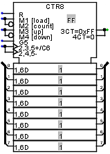
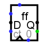
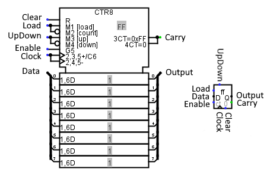

Counter
Counter
| Library : | Memory |  |
| Introduced : | 2.3.0 | |
| Appearance : |  |
Behavior
The counter holds a single value, whose value is emitted on the output Q and incremented or decremented by 1 each time the clock input is triggered. The counter value can be updated according to its D and Load inputs in synchronisation with the clock triggering. The Clear input asynchronously sets the counter bits to zero. The UpDown input determines whether the counter is incremented or decremented when the clock is triggered. The Trigger property is used to define whether the counter is triggered on the rising or falling edge of the clock.
| Clear | Load | Count | UpDown | Déclanchement | Q |
| 1 | -- | -- | -- | -- | Q=0 |
| 0/U | 0/U | 0/U | -- | Front | Unchanged |
| 0/U | 1 | -- | -- | Front | Q=D |
| 0/U | 0/U | 1 | 0/U | Front | Q=Q-1 |
| 0/U | 0/U | 1 | 1 | Front | Q=Q+1 |
The range of counting can be configured using the Maximum Value attribute. When the counter reaches this value, the next increment wraps the counter back to 0; and if it is at 0, then a decrement will wrap the counter around back to its maximum value.
In addition to the output Q, the component also includes a single-bit output carry. This value is 1 when the counter is at its maximum value and is incrementing, or 1 when its value is 0 and is decrementing.
The clear input resets the counter's value to 0 (all zeroes) asynchronously; that is, as long as the Clear input is 1, the value is pinned to 0, regardless of the clock input.
Pins
The Appearance attribute allows two different images for this component. Logisim Evolution presents inputs to the west and outputs to the east, while I present the pins from top to bottom and from west to east.
- Clear: labeled R
- Input. When 0 or undefined U, this input has no effect. As long as it is 1, the counter's value is asynchronously pinned to 0. This occurs asynchronously - that is, without regard to the current clock input value. As long as this is 1, the other inputs have no effect.
- Load: labeled M1 [load] M2 [Count]
- Input: When this is 1 the counter will load the value found at the data input at the next clock trigger. Bit width 1.
- UpDown : labeled M4 [up] M4 [down]
- When this input is set to 1, the counter increments on trigger events; when it is set to 0, it decrements. Bit width 1.
- Count : labeled G5
- When this input is set to 1, clock events increment or decrement the counter according to the UpDown pin status. Bit width 1.
- Clock : labeled 2,3,5+/C6 2,4,5
- When triggered according to the rules specified by the Trigger attribute, the counter is incremented or updated as indicated by the load and count inputs. Bit width 1.
- Data: labeled 1,6 D
- Input Data: When the clock triggers while load is 1 the counter's value changes to the value found at this input. Bit width matches Data Bits attribute.
- Sortie Carry : étiquette 3CT=0x.. 4CT=0
- When input UpDown is set to 1, this output is set to 1 if the counter is at its maximum, and when input UpDown is set to 0, this output is set to 1 if the counter is at 0. Bit width 1.
- OutPut :
- Outputs the value currently stored by the counter. Bit width matches Data Bits attribute.
Attributes
When the component is selected or being added, Alt-0 through Alt-9 alter its Data Bits attribute.
- Data Bits
- The bit width of the value emitted by the component.
- Maximum Value
- The maximum value, at which point the counter will set its carry outputor loop.
- Action On Overflow
-
The behavior when the counter attempts to increment beyond the maximum value or decrement beyond 0. Four possible actions are supported:
- Wrap around
- The next value is 0 if incrementing - the maximum value if decrementing.
- Stay at value
- The counter's value remains at the maximum or 0 if decrementing.
- Continue counting
- The counter continues incrementing/decrementing, keeping the number of bits as provided by the Data Bits attribute.
- Load next value
- The next value is loaded from the D input.
- Trigger
-
Configures how the clock input is interpreted. Values :
rising edge indicates that the counter should update its value at the instant when the clock rises from 0 to 1.
falling edge value indicates that it should update at the instant the clock falls from 1 to 0. - Label
- The text within the label associated with the component.
- Label Font
- The font with which to render the label.
- Appaerance
- Logisim-HolyCross / Logsim-Evolutions: New presentation of flipflops in the IEC way. Classic Logisim: Presents flipflops as the legacy of logisim
Poke Tool Behavior
Clicking the counter brings keyboard focus to the component (indicated by a red rectangle), and typing hexadecimal digits will change the value stored in the counter.
Text Tool Behavior
Allows the label associated with the component to be edited.
Back to Library Reference